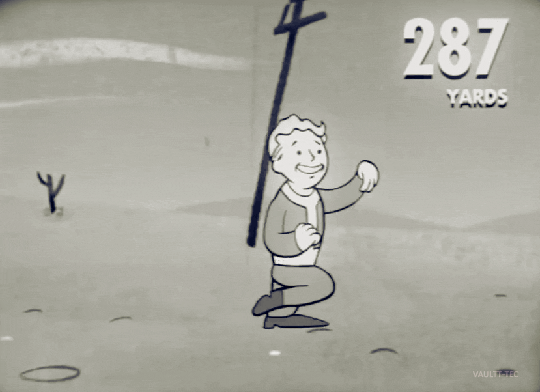

Una de las principales modificaciones en el combate es el aumento en la fuerza de ataque y la resistencia de los enemigos. En comparación con la dificultad "Muy Difícil", el daño infligido por los enemigos se incrementa considerablemente, lo que requiere que los jugadores sean más tácticos y estratégicos en sus enfrentamientos. Aunque el daño saliente del jugador se incrementa en términos absolutos, este aumento es menor en comparación con el incremento en el daño infligido por los enemigos. Además del aumento en la fuerza y la resistencia de los enemigos, la frecuencia de encuentro con enemigos de nivel superior se ha incrementado lo que significa que los jugadores pueden encontrarse con enemigos más poderosos con mayor regularidad. Otro cambio importante es la ralentización en la tasa de curación de los objetos de ayuda, lo que limita la capacidad de los jugadores para recuperar salud durante el combate. Esto obliga a los jugadores a ser más cautelosos y tácticos en sus estrategias de combate, y a depender más de la planificación y la preparación previa a los enfrentamientos.

A pesar de los desafíos adicionales en el combate, los jugadores son recompensados con el doble de puntos de experiencia, lo que les permite avanzar más rápidamente en el juego y desbloquear nuevas habilidades y mejoras. Además, se introduce un nuevo perk llamado Adrenalina, que aumenta el daño infligido por el Sole Survivor en un 50% después de matar a cada cinco enemigos.